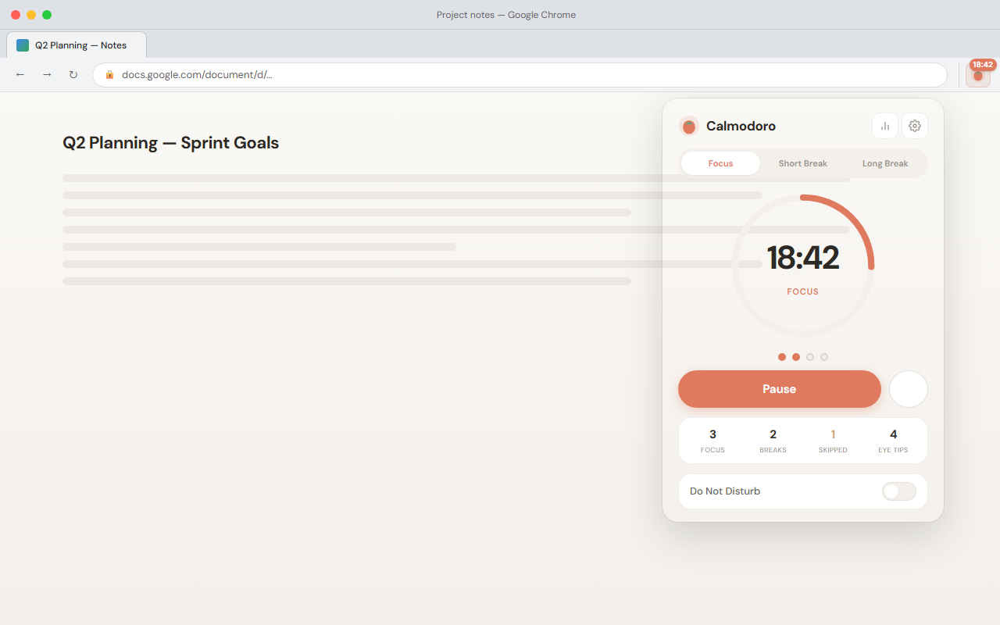
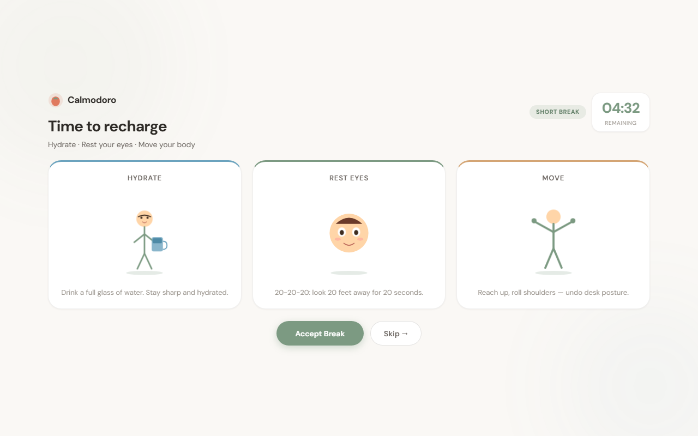
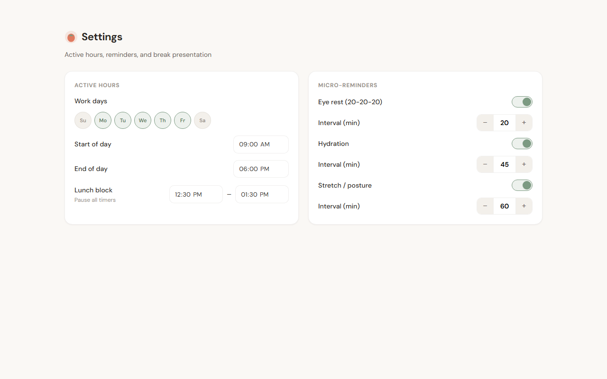
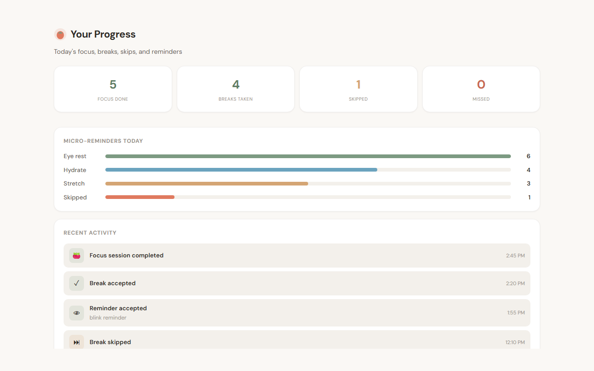
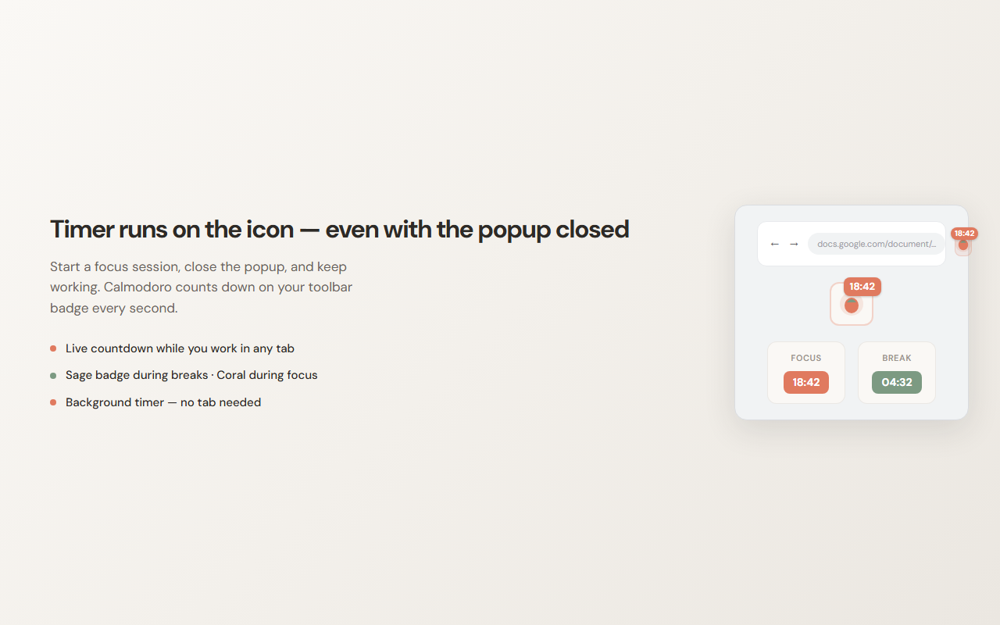

Structured focus sessions, wellness break rituals (hydrate · blink · stretch), independent micro-reminders, and a live countdown on the toolbar icon — all stored on your device.

Pomodoro discipline without noisy interruptions — original animations, schedule-aware timers, and habits you can actually track.
Close the popup and keep working. The remaining time updates every second on the toolbar icon.
Three-panel ritual: hydrate, rest eyes (20-20-20), and stretch — with original CSS/SVG animations.
Independent eye, water, and stretch intervals during active hours — toast or notification.
Work days, start/end times, lunch block, and morning vs afternoon focus durations.
Daily stats for sessions completed, breaks taken, skipped, and missed — plus reminder acknowledgments.
All data in chrome.storage.local. No accounts, no analytics, no remote code. Open source MIT.
Real extension UI — popup, break ritual, settings, stats, and toolbar badge exactly as they appear in Chrome.




Four steps from install to your first focused work session.
Add Calmodoro from the Chrome Web Store or load unpacked from GitHub for development.
Pin the icon to your toolbar. Open Settings to set active hours, durations, and reminder intervals.
Click Start Focus and close the popup. Watch the badge count down on the icon while you work.
When a session ends, accept the break triptych or skip — stats track your habits over time.
Most Pomodoro timers stop when you close the popup. Calmodoro keeps running — with wellness built in.
| Capability | Typical timers | Calmodoro |
|---|---|---|
| Runs with popup closed | Often stops | Background + live badge |
| Wellness break rituals | Generic notification | Triptych + micro-reminders |
| Schedule-aware | Always on | Active hours + lunch block |
| Skip & miss tracking | — | Daily stats log |
| Data leaves device | Often yes | 100% local storage |
Calmodoro is built for the Chrome Web Store. Ratings and reviews will appear here once the extension is published and users start sharing feedback.
Add to ChromeInstall from the Chrome Web Store, or load unpacked for development.
The recommended way to install. One click, automatic updates, and verified by Google.
Add to ChromeClone the repo, open chrome://extensions, enable Developer mode, and click Load unpacked. Select the Calmodoro root folder.